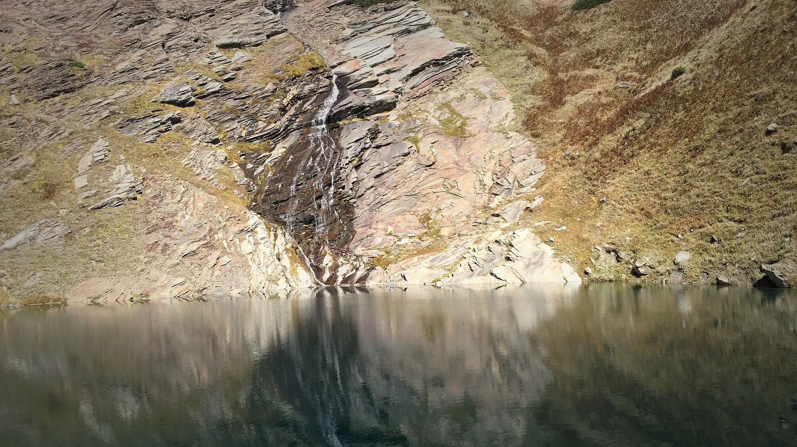

01Day 1 · Dhundikm 0.1
Up the Solang valley
21kmFrom Manali · By road, via Solang
The drive from Manali runs up the Solang valley to Dhundi, where the walk begins.

Photo: Gaurav Dhingra, CC BY-SA 4.0ब्यास कुंड · Kullu, Himachal
The trek in one line, and what you can do with it.
Beas Kund is one of the easiest high treks from Manali: three days, one meadow camp, and a lake under a wall of peaks.
4 stops on the map, then the climb. Scroll the stops and the map follows.
01Day 1 · Dhundikm 0.1
21kmFrom Manali · By road, via Solang
The drive from Manali runs up the Solang valley to Dhundi, where the walk begins.
01Day 1 · Bakarthach · 3,270 mkm 4.0
4kmToday · 3–4 h
The trail climbs out of the trees to Bakarthach, an open meadow camp below the big peaks.
02Day 2 · Beas Kund · 3,700 mkm 9.9
12kmThere and back · 6–7 h
Past river crossings and over boulders of old moraine, the trail reaches Beas Kund, the glacial lake at the source of the Beas river.
03Day 3 · Dhundikm 19.9
4kmToday · 3–4 h
A short walk back down to Dhundi, then the drive to Manali.
Best in Jun, Sep–Oct.
Dark: the months the trek’s sources call its best. Mid: possible. See all treks in June.
 Photo: Gaurav Dhingra, CC BY-SA 4.0
Photo: Gaurav Dhingra, CC BY-SA 4.0
Base prices from 6 operators’ own pages, per person. GST and travel are often extra. Treqz sells nothing.
₹4,500–15,500
The practical things, then the questions people ask.
One thing from each part of the packing list, so nothing big is missed. The full list, with where to rent and the daily rates, is on the 3D page.
The full packing list →


Bikat says Airtel and Jio work on most of the trail. Himalaya Shelter says there is no network after Manali. Make your calls before you leave.
Bikat Adventures, Himalaya ShelterThe last charging point is your hotel in Manali. Charge your phone and power bank before you go.
Bikat AdventuresYou share a two-person tent; a single tent costs ₹900 more with Bikat. Toilets are dry pits in a toilet tent.
Bikat AdventuresPorters or mules carry a bag of up to 12 kg for ₹500 a day with Himalaya Shelter.
Himalaya ShelterAbout 20.0 km of walking over 3 days on the trail.
The highest point is 3,700 m, about 780 m above the start.
Its sources grade it Easy.
Jun, Sep–Oct. It is also possible in May, Jul–Aug.
₹4,500 to ₹15,500 per person: base prices from 6 operators' own pages. GST and travel are often extra.
Bikat says Airtel and Jio work on most of the trail. Himalaya Shelter says there is no network after Manali. Make your calls before you leave.
There are no ATMs after Manali. Use the ATMs in Manali's main market.
Thermal top and bottom, Full-sleeve T-shirts, Full-sleeve sweater, Warm jacket, Rain jacket and rain pants, Quick-dry trek pants ×2, Waterproof warm gloves, Woollen cap. The full list is on the 3D page.
Its sources do not list December to February as a trekking season.
Its sources grade it Easy and it takes 3 days on the trail, with a highest point of 3,700 m.
Bhrigu Lake, Hampta Pass, Sar Pass, Kheerganga, Prashar Lake.


Treks in June · Treks in September · Treks in October · Treks in Himachal Pradesh · Beginner Treks in Himachal Pradesh · Easy Treks in India for Beginners · 3 Day Treks in India · Treks in Kullu, Himachal Pradesh · Treks in India Under ₹10,000 · Beas Kund vs Triund · Beas Kund vs Hampta Pass · Beas Kund vs Bhrigu Lake · Beas Kund vs Sar Pass · Free trek finder · All treks in 3D